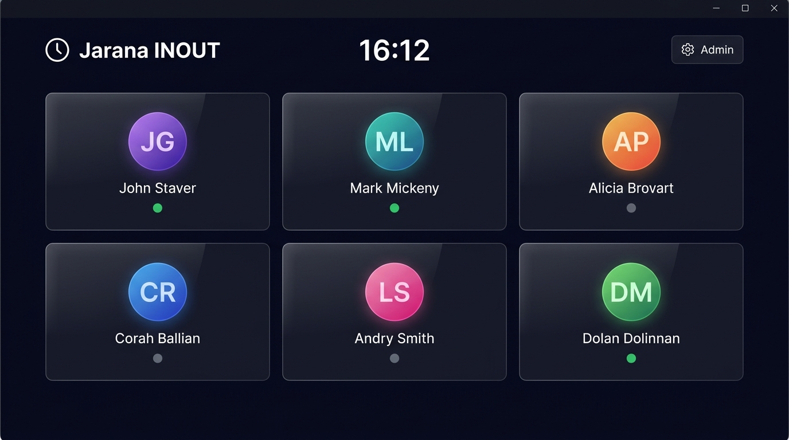
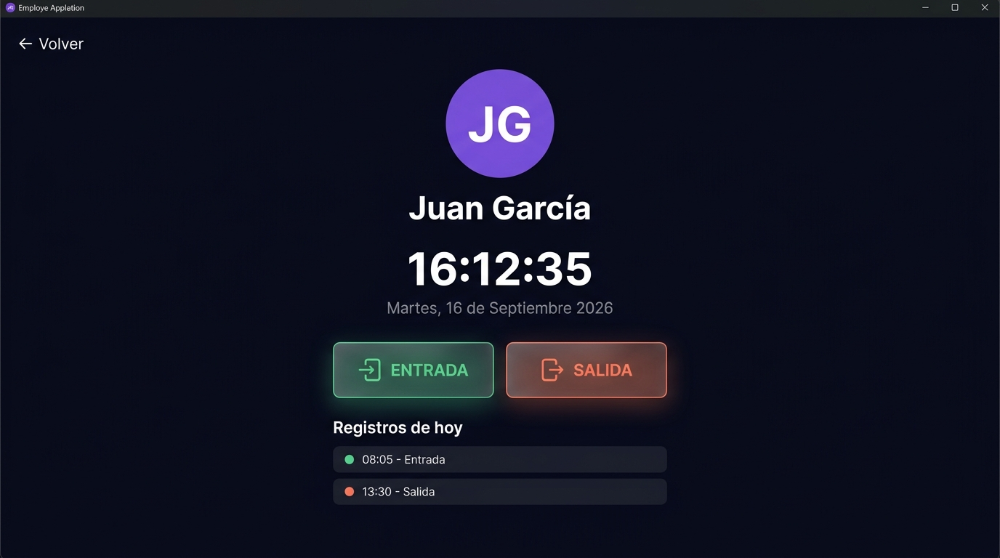
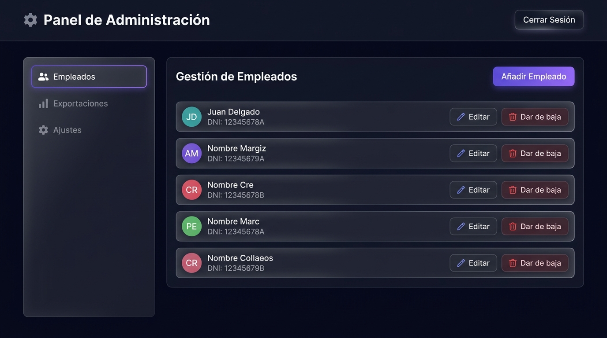

Sistema Profesional de Control Horario, Rendimiento, Durabilidad y Cumplimiento Normativo (RD-ley 8/2019)
Jarana INOUT es una solución de escritorio de alto rendimiento diseñada específicamente para satisfacer la obligación legal de registro de jornada laboral establecida por el Real Decreto-ley 8/2019, de 8 de marzo en empresas y establecimientos comerciales.
Su diseño responde a la necesidad de disponer de un sistema intuitivo, rápido y 100% privado que elimine por completo la dependencia de servidores en la nube, tarifas mensuales recurrentes o riesgos de fuga de datos por internet.
El sistema opera bajo el paradigma de Kiosco Táctil: se ubica en un terminal a la entrada del establecimiento, permitiendo a los empleados registrar sus entradas y salidas con un solo toque. A su vez, los responsables de Recursos Humanos disponen de un panel de administración protegido con acceso a estadísticas, altas/bajas de personal y exportación a Microsoft Excel (.xlsx).
Todos los registros se almacenan exclusivamente en el equipo de la empresa. No viajan datos a través de internet, garantizando total privacidad, velocidad instantánea y cumplimiento estricto del RGPD.
La pantalla de inicio está siempre disponible para los empleados. Presenta una cuadrícula con tarjetas individuales donde se aprecian las iniciales, nombre y puesto de cada trabajador activo.

Figura 1: Pantalla principal de autoservicio para los empleados.
En esta vista se presentan dos grandes botones: ENTRADA y SALIDA. Además, se muestra el historial de movimientos registrados durante el día actual para evitar dudas en el trabajador.

Figura 2: Botones de fichaje y cronología del día actual.
Algoritmo de Redondeo Automático:
Mecanismo de Prevención de Errores (Tolerancia de 10 minutos):
Si un empleado pulsa accidentalmente "Salida" antes de que hayan transcurrido 10 minutos desde su entrada, la aplicación detecta el error de manera inteligente y muestra un aviso interactivo. Si confirma que fue una equivocación, el sistema anula de forma automática ambos registros, evitando incongruencias sin requerir ayuda del administrador.
Recuperación de Olvidos y Turnos Nocturnos (Límite de 8 horas continuas):
Si un empleado no marcó su salida y transcurren más de 8 horas desde su entrada, la aplicación activa un protocolo asistido:
Accesible pulsando el icono de engranaje en la cabecera mediante contraseña maestra. Dispone de indicadores y avisos visuales (badges de notificación) y se organiza en cuatro áreas:

Figura 3: Panel de administración con menú lateral estructurado.
| Componente | Requisito Mínimo | Requisito Recomendado |
|---|---|---|
| Sistema Operativo | Windows 10 (64-bit) | Windows 10 / 11 (64-bit) |
| Procesador | Intel Celeron / AMD Athlon 1.8 GHz | Intel Core i3 / Ryzen 3 o superior |
| Memoria RAM | 2 GB RAM | 4 GB RAM o superior |
| Espacio en Disco | 250 MB libres | 500 MB libres en disco SSD |
| Pantalla | Resolución 1024 x 768 | Pantalla táctil Full HD (1920 x 1080) |
| Conectividad | No requerida (100% Offline) | Aislado de red por seguridad |
| Operación | Tiempo Medido | Comportamiento |
|---|---|---|
| Arranque de la aplicación | 1.2 - 1.8 segundos | Rápido e instantáneo |
| Registro de fichaje | < 5 milisegundos | Inmediato, sin bloqueos |
| Generación reporte mensual | 0.3 segundos | Descarga directa en Excel |
| Consumo de CPU en reposo | 0.0% - 0.4% | Apenas perceptible |
| Consumo de Memoria RAM | 75 - 110 MB | Ligero y estable 24/7 |
Cálculo para un escenario representativo de 5 a 6 empleados con turno partido (4 registros diarios por trabajador):
| Periodo de Tiempo | Total de Registros | Espacio en Disco Ocupado |
|---|---|---|
| 1 Mes | 720 fichajes | ~108 KB |
| 1 Año | 8.760 fichajes | ~1,3 MB |
| 5 Años | 43.800 fichajes | ~6,5 MB |
| 10 Años | 87.600 fichajes | ~13,0 MB |
Dado que los sistemas informáticos actuales leen archivos de 10 a 20 MB en cuestión de milisegundos, una empresa de 6 empleados puede operar durante más de 10 años ininterrumpidos sin experimentar ninguna lentitud ni requerir limpiezas de datos.
| Requisito Legal | Implementación en Jarana INOUT | Garantía |
|---|---|---|
| Registro diario | Horas exactas de entrada y salida registradas. | Cumple al 100% la normativa. |
| Conservación durante 4 años | Capacidad de retener más de una década de registros. | Plena disponibilidad legal. |
| Entrega ante Inspección | Exportación a Excel en 1 clic. | Acreditación inmediata. |
| Confidencialidad (RGPD) | Datos almacenados en el PC local sin acceso externo. | Protección total de los trabajadores. |
Jarana INOUT © 2026 • Documentación Oficial • Todos los derechos reservados